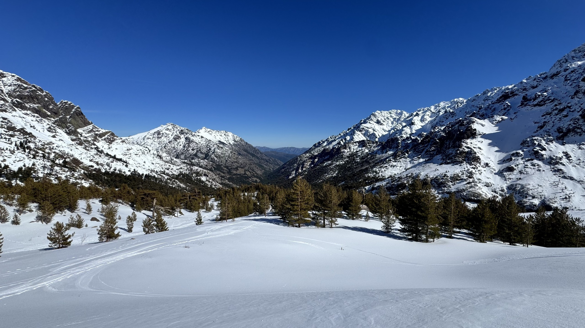
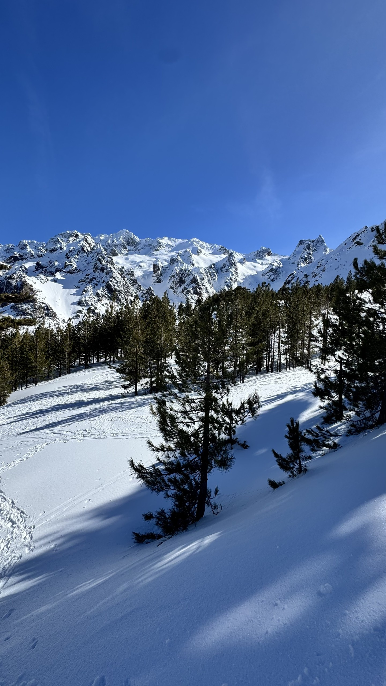
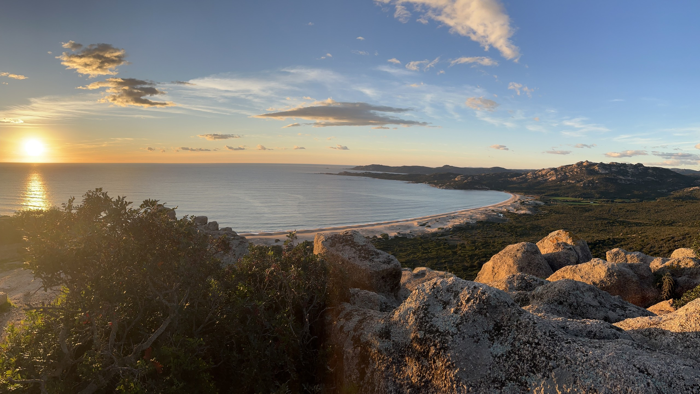

Une île, une autre saison
La Corse
en hiver.
Votre programme
guidé par la météo.
500 € par personne · dès 3 participantsInformations pratiques ↓
01 / L’esprit
Suivre la saison.
Prendre le temps.
L’hiver révèle une autre Corse. Des sentiers plus calmes, des villages à écouter, des paysages à regarder autrement.
Pendant cinq journées, je vous accompagne entre nature et culture : randonnées, raquettes lorsque les conditions le permettent, villages, patrimoine, histoire et gastronomie.
De novembre à début avril, le programme reste souple. Il évolue avec la météo, les conditions du terrain, vos envies et votre niveau. Randonnées, raquettes lorsque les conditions le permettent, villages et découvertes patrimoniales se combinent selon les circonstances.
02 / Les découvertes
De la montagne
aux villages.
Les itinéraires sont choisis selon la météo, le terrain et le niveau du groupe.

Marcher au grand air
Randonnée en Corse en hiver, lumière sur les reliefs et raquettes si l’enneigement et le terrain s’y prêtent.

Rencontrer une histoire
Villages, patrimoine et histoire de l’île. Prendre le temps de comprendre les lieux, et de découvrir la gastronomie corse.

03 / Le programme
La météo donne
le rythme.
La souplesse fait partie du voyage. Ma connaissance du territoire permet de choisir les découvertes adaptées aux conditions, sans perdre le fil de votre séjour.
- 01
Nous parlons de vos envies
Votre expérience de marche, votre rythme et ce que vous souhaitez découvrir.
- 02
J’observe les conditions
Météo, état du terrain et accès orientent le choix des sorties. La neige n’est pas garantie.
- 03
Nous adaptons les journées
Montagne, littoral ou patrimoine : le programme évolue pour privilégier les découvertes pertinentes et la sécurité.

04 / Votre guide
Un territoire.
Deux regards.
Accompagnateur en montagne et guide-conférencier, je vous propose une découverte où les paysages et l’histoire se répondent.
Ma connaissance du territoire corse relie les sentiers aux villages, les reliefs aux histoires humaines. Je vous accompagne pour marcher, observer et comprendre.
Yann Pasqualini
Basé à Biguglia · Corse05 / Votre séjour
Cinq journées.
La Corse autrement.
Cinq journées d’accompagnement, de novembre à début avril. Les dates sont à la demande, selon les disponibilités. Les lieux de départ et les secteurs explorés sont flexibles, adaptés à votre groupe et au programme.
Écrivez-moi avec vos dates envisagées, le nombre de participants et vos envies.
yannpasqualiniaem@gmail.com ↗Le lien e-mail ouvre votre messagerie. Aucun message n’est envoyé automatiquement.
- Sur la base de trois participants minimum
- Seul ou à deux : demandes acceptées, avec un tarif personnalisé sur devis
- Dates à la demande, selon les disponibilités, de novembre à début avril
- Départs et secteurs flexibles, adaptés à votre groupe et au programme
- Randonnées, raquettes, villages et patrimoine, selon la météo, vos envies et votre niveau
- Hébergement et transports non compris, à réserver séparément par vos soins
Le tarif de 500 € par personne couvre les cinq journées d’accompagnement, sur la base de trois participants minimum. Pour une ou deux personnes, une proposition tarifaire personnalisée vous sera adressée.
06 / À savoir
Avant de partir.
Y a-t-il un programme jour par jour ?
Nous définissons les grandes envies ensemble. L’ordre et le contenu des journées évoluent selon la météo, les accès et les conditions du terrain.
Les sorties raquettes sont-elles garanties ?
Non. Les raquettes sont une possibilité lorsque l’enneigement et les conditions le permettent. D’autres découvertes peuvent prendre leur place.
Quel niveau faut-il prévoir ?
Le niveau attendu sera précisé avec vous avant toute réservation, en fonction des sorties envisagées et de votre expérience.
Qui réserve l’hébergement et les transports ?
Vous réservez séparément votre hébergement et vos transports. Ils ne sont pas compris dans le prix annoncé pour l’accompagnement.
Quand venir et où se retrouver ?
De novembre à début avril, à des dates convenues à la demande, selon les disponibilités. Les lieux de départ et les secteurs sont flexibles, adaptés à votre groupe et au programme.
Puis-je faire une demande seul ou à deux ?
Oui. Les demandes individuelles ou à deux sont acceptées, avec un tarif personnalisé sur devis. Le tarif annoncé de 500 € par personne pour cinq journées s’applique sur la base de trois participants minimum.